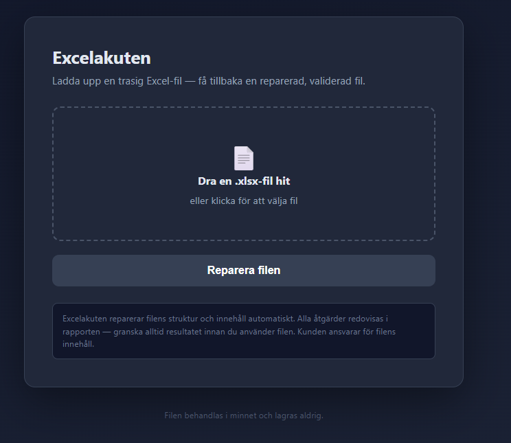
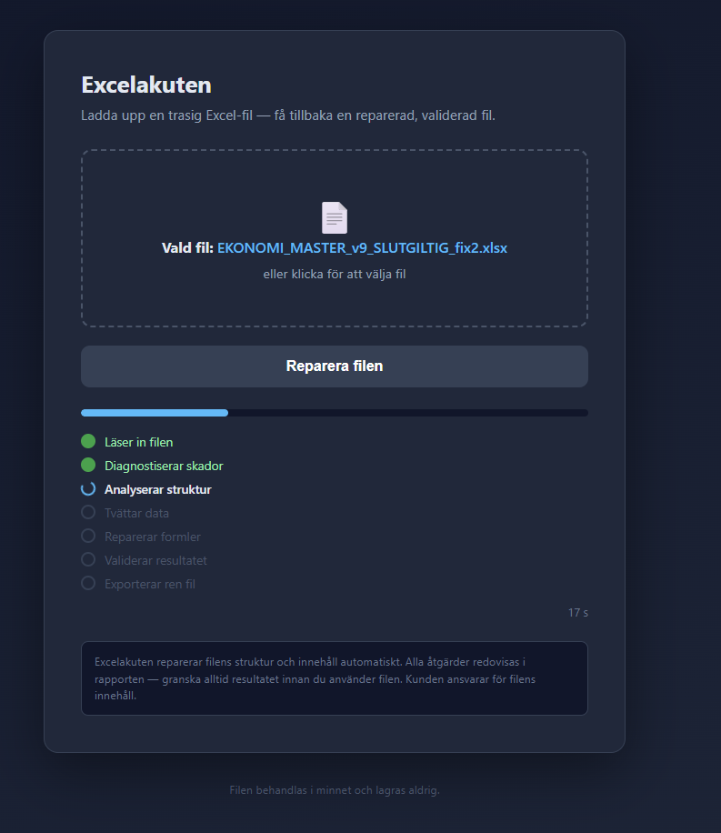
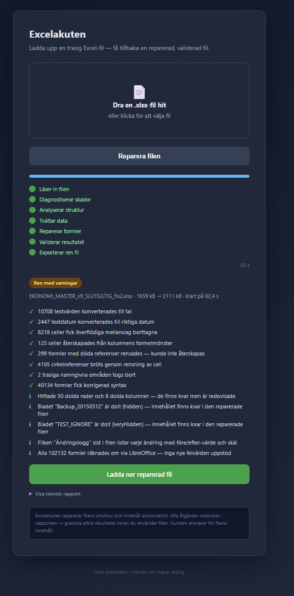
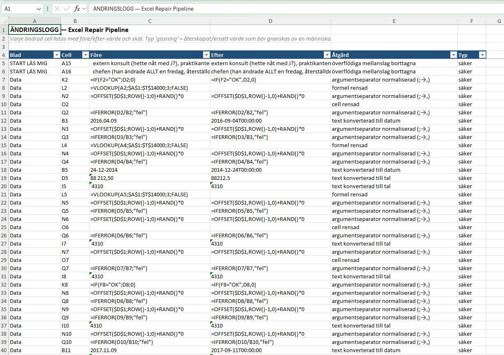

The problem
Every organisation has that one Excel file: 106k+ formulas, volatile INDIRECT/OFFSET chains, circular references, hidden sheets feeding visible formulas, values pasted over live formulas — and XML so corrupt Excel wants to "repair" it on every open. Nobody dares touch it.
My test file: 106,000+ formulas (28,000 volatile), formulas pointing at deleted sheets and dead network drives, 205 empty rows mid-table, 4 date formats in one column — and a worksheet claiming 1,048,575 used rows because of three stray cells.
How it works
- Load — parses even corrupt files: CSV, legacy .xls/.ods via LibreOffice, sanitised XML
- Diagnose — error map: hidden sheets, external links, broken formula chains
- Structure — finds tables, data types and the file's actual data sources
- Clean — text dates → dates, Swedish "1 234,56" → numbers, duplicates out, IDs kept as text
- Repair — #REF! terms, circular references, pattern-based formula reconstruction
- Validate — LibreOffice recalculates every formula; new errors stop the file
- Export — clean .xlsx plus a changelog sheet listing every touched cell
Stateless FastAPI service — files are processed in memory and never stored. A job API reports each stage in real time, so the UI shows actual progress instead of a spinner.


Result on the torture file — 82 seconds
- 10,708 text values converted to numbers
- 2,447 text dates converted to real dates
- 4,105 circular references broken
- 40,134 formulas syntax-corrected
- 102,132 formulas recalculated — 0 new errors


Design choices
Nothing is deleted silently: cells that can't be rebuilt are cleared and logged by reference. An integrity check diffs every cell against the original — unexplained changes get flagged. Sheet protection is preserved and reported; password-encrypted files get a clear error instead of a crash.
The code is private (commercial prototype), but the project deck is here: English PDF · Svensk PDF · Stack: Python · FastAPI · openpyxl · LibreOffice · Docker-ready.